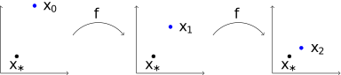
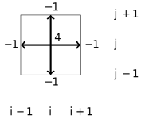
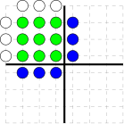
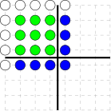
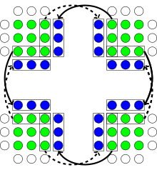
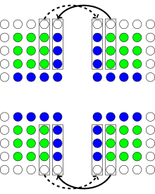
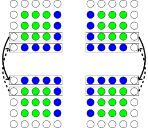
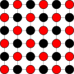

Applications of Parallel Computers
Stationary iterations
Prof David Bindel
Please click the play button below.
Fixed Point Iteration

\(x_{k+1} = f(x_k) \rightarrow x_* = f(x_*)\)
Stationary iterations for linear systems are an example of a fixed point iteration. A fixed point of a function \(f\) is a point \(x_*\) that \(f\) maps to itself. Fixed point iteration involves getting a new guess \(x_{k+1}\) by applying \(f\) to the previous guess \(x_k\) . And sometimes this actually converges to a fixed point!
Iterative Idea
\(f\) is a contraction if \(\|f(x)-f(y)\| < \|x-y\|\) , \(x \neq y\) .\(f\) has a unique fixed point \(x_* = f(x_*)\) .For \(x_{k+1} = f(x_k)\) , \(x_k \rightarrow x_*\) .
If \(\|f(x)-f(y)\| < \alpha \|x-y\|\) , \(\alpha < 1\) , for all \(x, y\) , then \[\|x_k-x_*\| < \alpha^k \|x-x_*\|\]
Looks good if \(\alpha\) not too near 1...
More specifically, we usually apply fixed point iteration to contraction mappings . A function \(f\) is a contraction if it takes distinct points and moves them strictly closer to each other. A contraction that maps some closed, bounded domain into itself is guaranteed to have a unique fixed point, and fixed point iteration converges to that point.
Things get even better if the function is Lipschitz with constant \(\alpha < 1\) – meaning, if the distance between \(f(x)\) and \(f(y)\) is at most \(\alpha\) times the distance between \(x\) and \(y\) . In this case, we have what a numerical analyst would call linear convergence, and others might call geometric or exponential convergence: the error at step \(k\) is at most \(\alpha^k\) times the initial error. This sounds great if \(\alpha\) is enough less than one!
Stationary Iterations
Write \(Ax = b\) as \(A = M-K\) ; get fixed point of \[M x_{k+1} = K x_k + b\] or \[x_{k+1} = (M^{-1} K) x_k + M^{-1} b.\]
Convergence if \(\rho(M^{-1} K) < 1\)
Best case for convergence: \(M = A\)
Cheapest case: \(M = I\)
Stationary iterations for linear systems are linear fixed point iterations. The idea is that we write the matrix as \(A = M-K\) . This is sometimes called a splitting of the matrix. We want the first part, \(M\) to somehow capture all of the important features of \(A\) , and yet be cheap to invert. If we put all of \(A\) into \(M\) , the resulting iteration converges in one step. But that step involves solving a linear system with \(A\) , which puts us right back where we started! Or we can use \(M = I\) , the so-called Richardson’s iteration; but that often gives us painfully slow convergence.
Stationary Iterations
Of course, there are many points between the extremes of Richardson iteration and fully solving the linear system. The two standard starting points are Jacobi iteration, which involves taking \(M\) to be the diagonal of the matrix \(A\) ; and Gauss-Seidel, which takes \(M\) to be the lower triangular part of \(A\) in some ordering.
What I’ve said so far is true, but it sort of misses the point of how these two methods are used in practice. Let’s make everything more concrete with an example.
Reminder: Discretized 2D Poisson Problem

\((Lu)_{i,j} = h^{-2} \left( 4u_{i,j}-u_{i-1,j}-u_{i+1,j}-u_{i,j-1}-u_{i,j+1} \right)\)
We’ve talked about this equation before – Poisson’s equation on a 2D mesh. The estimated Laplacian at a point – that is, the sum of the second derivatives in the x and y directions – is computed by looking at the neighbors to the north, south, east, and west of that point.
So what does it look like to run Jacobi iteration on a Poisson problem?
Jacobi on 2D Poisson
Assuming homogeneous Dirichlet boundary conditions
for step = 1:nsteps
for i = 2:n-1
for j = 2:n-1
u_next(i,j) = ...
( u(i,j+1) + u(i,j-1) + ...
u(i-1,j) + u(i+1,j) )/4 - ...
h^2*f(i,j)/4;
end
end
u = u_next;
endBasically do some averaging at each step.
The Jacobi iteration says we are going to get a new guess for the ith unknown by solving the ith equation, assuming all the other unknowns are correct. In the case of the Poisson equation, this looks a lot like just an averaging over neighbors.
Parallel version (5 point stencil)

Boundary values:
white
Data on P0:
green
Ghost cell data:
blue
Suppose we discretize the Poisson problem this way, and partition our domain into subdomains, one per processor. What does the dependency pattern for updating the unknowns on a given subdomain look like? Essentially, we need to get neighbor data (indicated in white) or ghost cell data (indicated in blue) off each edge of the processor domains.
Parallel version (9 point stencil)

Boundary values:
white
Data on P0:
green
Ghost cell data:
blue
What if I had a nine-point stencil instead of a five-point stencil? That is, what if I depended on diagonal neighbors, too? In that case, it looks like maybe I need to communicate with up to four more processors, right?
Of course, this would also be an issue for the five-point stencil if we were batching steps of the Jacobi iteration. Either way, there’s a trick.
Parallel version (5 point stencil)

Communicate ghost cells before each step.
In the five-point stencil case, assuming we were not batching steps, we would need to communicate data across processor boundaries at every step. That means that each processor would communicate with processors to its north, south, east, and west.
It turns out, we don’t need to have more messages in the nine point case. We just need some synchronization.
Parallel version (9 point stencil)

Communicate in two phases (EW , NS) to get corners.
To do one step of Jacobi in the nine-point case, we would usually communicate in two phases. In the first phase, we would have each processor exchange ghost cells with the neighboring processors to the east and west.
Parallel version (9 point stencil)

Communicate in two phases (EW, NS ) to get corners.
Then, in the second phase, we would have each processor exchange chost cells with the neighboring processors to the north and south – including ghost cells for the corner data just communicated in the east-west exchange! If you stare at this for a while, you can convince yourself that at the end of these two phases, everyone gets all the data they need to proceed, including the corners.
The same trick works in 3D, of course. We would just need three phases instead of two.
Gauss-Seidel on 2D Poisson
for step = 1:nsteps
for i = 2:n-1
for j = 2:n-1
u(i,j) = ...
( u(i,j+1) + u(i,j-1) + ...
u(i-1,j) + u(i+1,j) )/4 - ...
h^2*f(i,j)/4;
end
end
endBottom values depend on top; how to parallelize?
All right, so much for Jacobi on this model problem. Let’s turn now to Gauss-Seidel. The Gauss-Seidel update is identical to the Jacobi update, except that instead of always using the guess from a previous step, we do our relaxation step at point i based on the best current estimate we have for the neighbors of point i. If some of those neighbors got updated in the current phase, all the better! Of course, now the order in which updates occur matters, and that seems like it’s bad news for parallelism.
Red-Black Gauss-Seidel

Red depends only on black, and vice-versa.
There’s a trick here, which is that we aren’t really told from on high that we have to update the nodes in any particular order. Going through the grid in row-major or column-major order seems like it might be natural, but going through in checkerboard order reveals a lot more parallelism. In a checkerboard or chessboard, the neighbors of a red square are all black, and the neighbors of a black square are all red. So a Gauss-Seidel sweep can update all the black squares in whatever order it wants, then all the red squares in whatever order, provided that there is enough synchronization so that the black updates come before the red in any given phase.
Red-black ordering is a special case of the more general idea of multi-color ordering.
Red black Gauss-Seidel step
for i = 2:n-1
for j = 2:n-1
if mod(i+j,2) == 0
u(i,j) = ...
end
end
end
for i = 2:n-1
for j = 2:n-1
if mod(i+j,2) == 1
u(i,j) = ...
end
end
end
Here’s how I would code a rec-black Gauss-Seidel step for the 2D Poisson problem, by the way. At least, this is how I would do it in MATLAB.
Parallel red-black Gauss-Seidel sketch
At each step
Send black ghost cells
Update red cells
Send red ghost cells
Update black ghost cells
If I wanted to parallelize, my code wouldn’t change that much. I’d just have messages or a barrier at the halfway step for each iteration, as well as at the full step. Put differently: I would alternate back and forth between updating just black cells and just red cells until I decided I’d had enough or I found that the problem converged.
More Sophistication
Successive over-relaxation (SOR): extrapolate G-S
Block Jacobi: \(M\) a block diagonal matrix from \(A\)
Other block variants similar
Alternating Direction Implicit (ADI): alternately solve on vertical lines and horizontal lines
Multigrid
Mostly the opening act for Krylov methods .
And there’s a lot more beyond just Jacobi and Gauss-Seidel. The SOR method, for example, takes the Gauss-Seidel step and moves a bit farther in that direction. How best to scale the step is determined by spectral properties of the matrix, and the optimal step is usually hard to compute. Then there are block Jacobi and block Gauss-Seidel, which look exactly like Jacobi and Gauss-Seidel on a blocked version of the matrix. Methods like ADI solve a series of 1D problems, but alternate between relaxing on vertical stripes and horizontal stripes through the domain. This works surprisingly well, and something like this is the approach used in optimization methods like ADMM. At the extreme case, we have iterations like multigrid that can – in principle – reduce the error by a fixed fraction in a fixed number of iterations (independent of mesh size) for problems like 2D Poisson.
But even multigrid is often not used on its own any more, and even more so with the other methods. Instead, these stationary iterations are used as the basis of preconditioners for Krylov subspace methods. But we will take up that thread in Thursday’s slide decks.